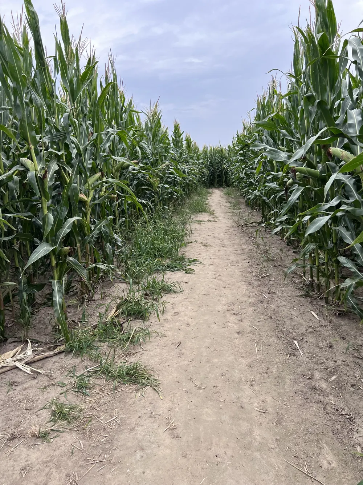
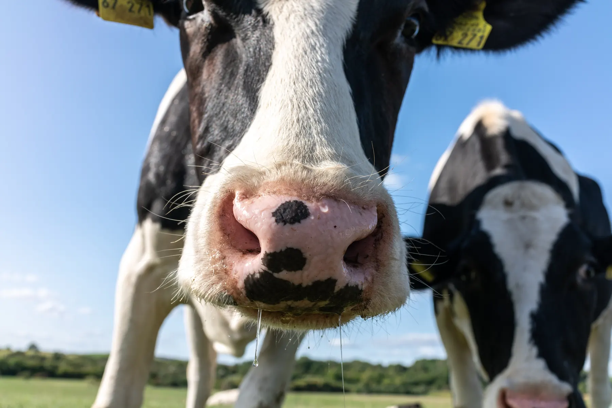

- Startseite
- Neuigkeiten
Vom Hof und aus der Presse
Was gibt’s Kuuuhles Neues?
Neues vom Hof, aus der Molkerei und aus der Presse.


Aktuelle Beiträge
Neue Führung, neue Attraktionen
Bei Hemme Milch beginnt eine neue Ära: Gunnar Hemmes Nichte Ilsabe Hemme wird zweite Geschäftsführerin und verantwortet Markenentwicklung, Marketing und Vertrieb. Auf dem Hof kommen neue Angebote für Familien dazu, vom Sprunghügel bis zum Maislabyrinth in Form eines Mähdreschers. Bericht der Märkischen Oderzeitung.
Regionalmarkt am 3. Oktober 2025
Zum Tag der Regionen lädt der Hemme-Hof zum Regionalmarkt ein: regionale Produkte, Begegnungen mit Erzeugern, Hofführungen, Live-Musik vom Kella-Pop Chor, Puppentheater, Quiz im Maislabyrinth, Treckerschau, Stroh-Hüpfburg und Streichelzoo.
Neues Maislabyrinth bei Hemme Milch
Auf unserem Erlebnis-Bauernhof wartet eine Ferienattraktion: ein vier Hektar großes Maislabyrinth in Form einer riesigen Kuh mit dem Schriftzug „Hemme“, mit Mitmach-Stationen und einem Quiz mit wechselnden Fragen. Für Kinder gibt es weitere Spielmöglichkeiten rund um den Hof.
So entsteht das Maislabyrinth
Das Labyrinth wurde nicht nachträglich ins Feld geschnitten, sondern schon bei der Aussaat geplant. Mit Unterstützung der FarmBlick GmbH und der Agromais GmbH entstand das Wegesystem über eine digitale Aussaatkarte, gepflanzt wurde die Sorte „Toskano“. An fünf Stationen warten Themen und ein Quiz mit Gewinnen.
Besuch der REWE-Region Ost
Eine Delegation der REWE-Gruppe lernt bei uns die ganze Kette kennen, von der Aufzucht der Futterpflanzen über die Haltung der Milchkühe und die schonende Verarbeitung bis zur Qualitätssicherung.
In der Presse und dabei
Hemme Milch ist in der Ausgabe 04/2025 der Milch-Marketing zu finden, unter dem Titel „Tradition trifft Innovation, ein Bauernhof mit Zukunft“. Außerdem ist Hemme Teil der Kampagne „Deine Wahl ist regional“.